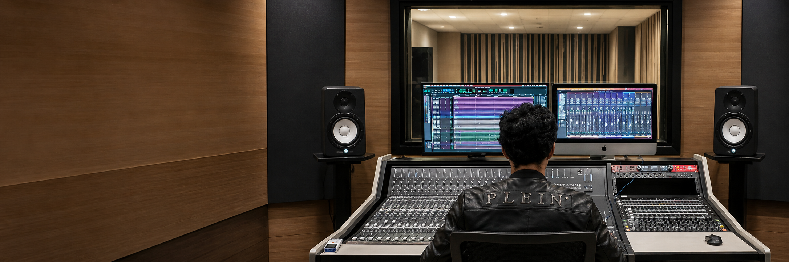

Técnico en Ingeniería de Sonido · Lima, Perú
Audio profesional para música, live sessions y postproducción.
Grabación, edición, mezcla, mastering, restauración de audio y sincronización audio-video para músicos, bandas, estudios y productoras.
01
Edición, limpieza y preparación de sesiones.
02
Mezcla, mastering y entregables finales.
03
Postproducción audiovisual, Foley, FX y sincronización.
Portafolio
Trabajos seleccionados de audio y postproducción.
Selección de proyectos musicales y audiovisuales donde participé en procesos de mastering, edición, restauración, mezcla, sincronización audio-video y live sessions.


Live session · Edición · Mezcla
Fe Guevara — Live Session Mix GIT
Edición de video y audio, sincronización con imagen, regrabación de voces y guitarras, y apoyo en mezcla musical.

Publicidad · Audio audiovisual
Reel Hombres de Negro
Participación en pieza audiovisual publicitaria con enfoque en edición, sincronización y tratamiento de audio para formato corto.
dB
dBAdvice & Solution
Locución · Edición · Mezcla
dBAdvice & Solution
Grabación de locución y voz en off, edición de tomas vocales, limpieza básica de audio y mezcla final del material.
5.1
Sound Re-Design
Foley · FX · Ambientes · Mezcla 5.1
Sound Re-Design — Gato con Botas
Rediseño sonoro de escena audiovisual con Foley, ambientes, efectos, sincronización con imagen y mezcla 5.1 en Pro Tools.
Servicios
Audio con criterio técnico y musical.
Trabajo orientado a procesos reales de estudio: orden, limpieza, escucha crítica, preparación de sesiones y entrega final.
Grabación y asistencia de estudio
Preparación de sesiones, flujo de señal, gain staging, grabación de voces, guitarras, locución y apoyo técnico durante sesiones.
Edición y restauración
Comping, limpieza de tomas, edición de diálogos, reducción de ruido, restauración con iZotope RX y sincronización audio-video.
Mezcla y mastering
Balance, dinámica, espacialidad, coherencia tonal y preparación final para entregas musicales o audiovisuales.
Postproducción audiovisual
Foley, ambientes, FX, edición de diálogos, mezcla 5.1, stems, bounces y archivos de entrega.
Sobre mí
Sonido para proyectos que necesitan orden, intención y detalle.
Soy César Aching, técnico en Ingeniería de Sonido en Lima. Mi trabajo se enfoca en grabación, edición, mezcla, mastering, restauración de audio y postproducción audiovisual.
Trabajo con Pro Tools, Studio One, Logic Pro, iZotope RX y Smaart. También cuento con experiencia complementaria en sonido en vivo, FOH/monitores y manejo de consolas digitales.
Pro Tools
iZotope RX
Studio One
Logic Pro
Smaart
FOH / Monitores
Perfil técnico-musical
Experiencia en proyectos musicales, live sessions, contenido audiovisual, restauración de audio, mezcla, mastering y operación técnica para músicos y equipos de producción.
Créditos publicados
IMDb · YouTube · TikTok
Herramientas
Pro Tools · RX · Smaart
Áreas
Studio · Post · Live sound
Contacto
¿Tienes un proyecto musical o audiovisual?
Cuéntame qué necesitas y revisamos la mejor forma de trabajar el audio: grabación, edición, mezcla, mastering, restauración o postproducción.
Correo: csr.aching4@gmail.com
Ubicación: Lima, Perú